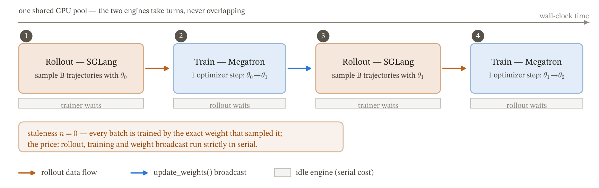
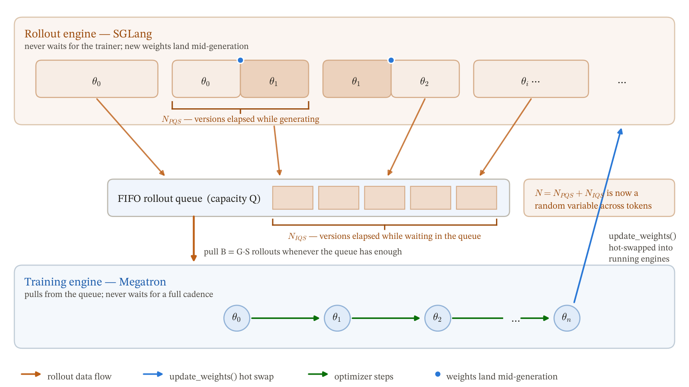
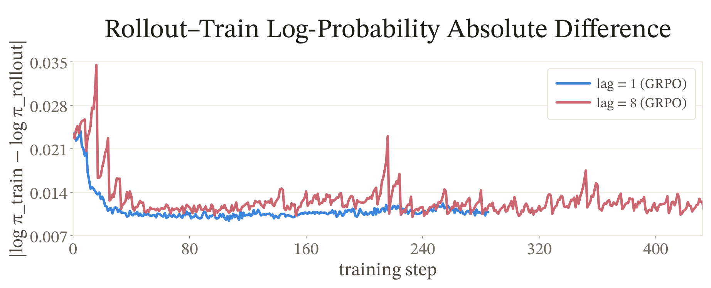
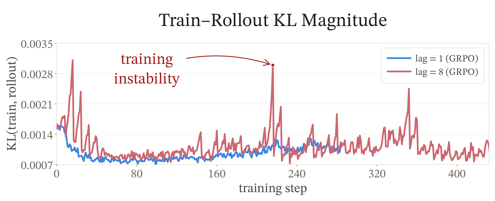
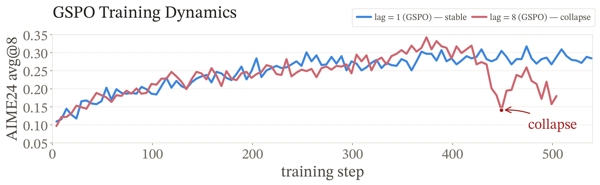
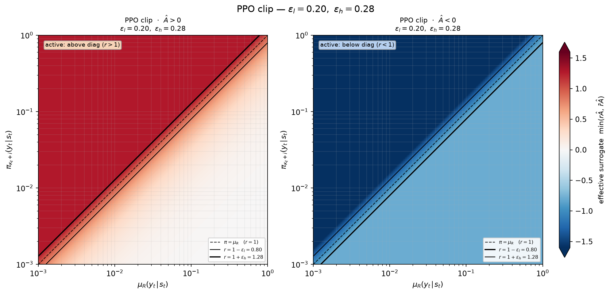
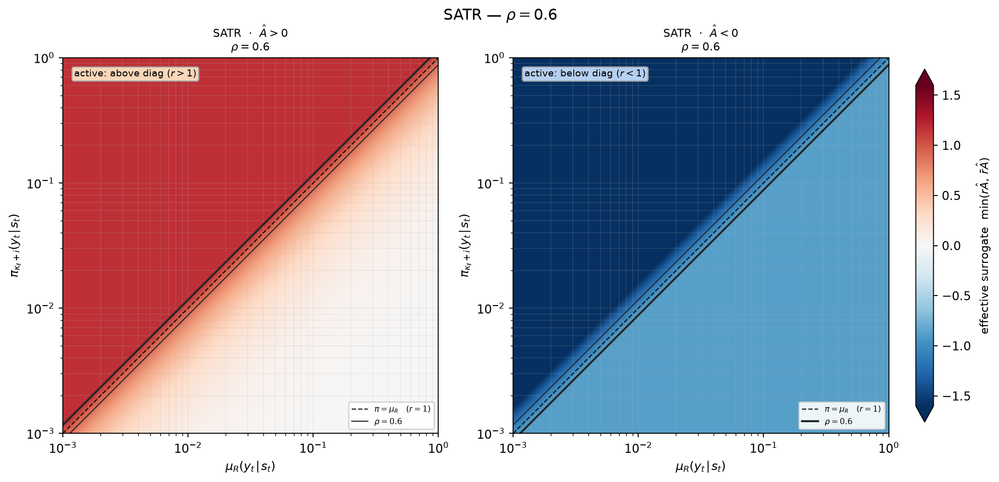
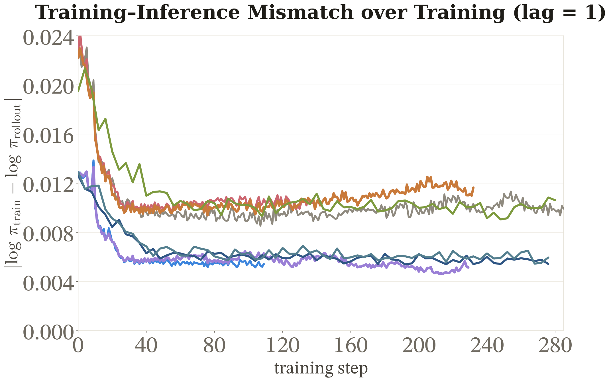
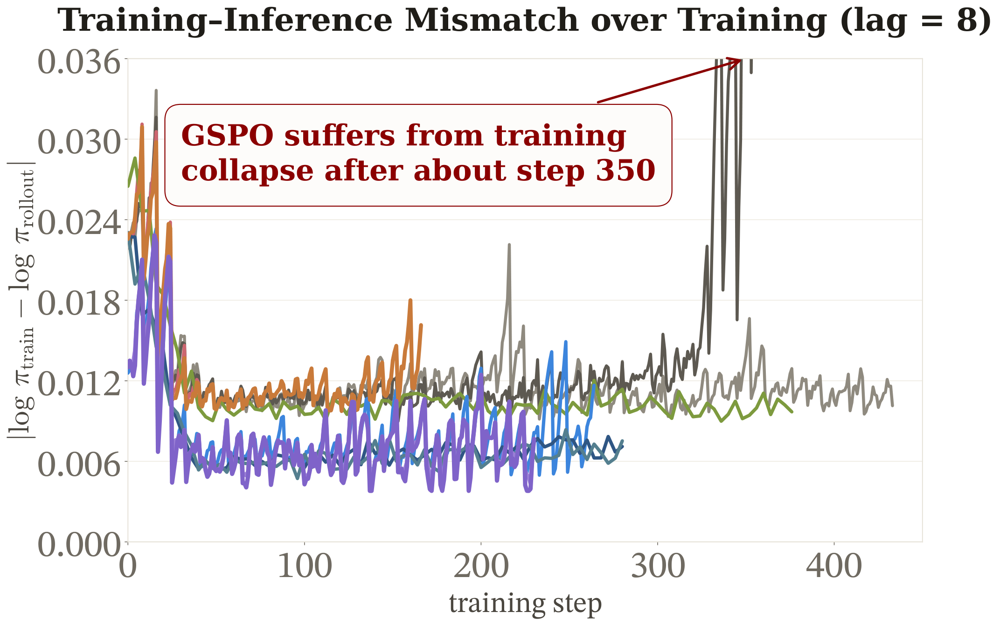
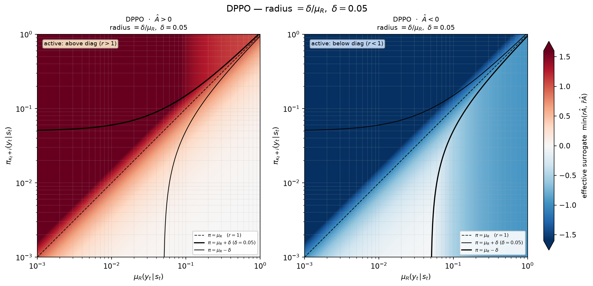

异步强化学习将rollout（由SGLang执行）与训练（由Megatron执行）解耦，让两者并行运行，大幅提升训练效率。但代价是产生token级重要性比rb,t：当前训练策略相对rollout策略的采样概率比，它不可避免地偏离1。
腾讯混元HY大模型团队从理论根源剖析了异步RL中的陈旧度问题，并提出了Staleness-Adaptive Trust Region（SAT）。在Qwen3-30B-A3B-Base上，SAT-GSPO w/ R3在lag=1和lag=8两种配置下都达到了最高AIME24最佳检查点avg8，而固定裁剪基线的lag=8配置在训练后期崩溃。
将rollout与训练解耦后，版本滞后分布可以形式化为三种范式。同步RL中rollout与训练完全串行，两个引擎从不重叠，一个优化步的耗时是rollout + 训练 + 广播的串行总和。优势是严格on-policy，rb,t≡1，不需要离策略校正，但吞吐受限。同步RL流水线架构如下图所示：

批式异步RL中所有token共用一个行为检查点，实际lag为Nb,t=n+h：批次交接时的lag加上消费时的局部更新偏移。观测陈旧度可拆为策略版本差项与实现失配项。完全异步RL中token行为随时间变化，μb,t可以随token改变，每个token的实际lag取决于到达调度器的时刻。完全异步流水线如下图所示：

核心理论线：inference policy μ 与training policy π 之间的divergence越大，策略改进近似越不可靠。对状态s，divergence可以定义为DTV(μ,π)[s]=½Ea∼μ(·|s)|r(a)−1|。若对每个动作都有硬约束 |r(a)−1|≤ε，则可得DTV≤ε/2。但PPO裁剪只观测采样动作并改变其损失，不会执行全动作硬约束：它只是采样目标上的一道截断，不是针对divergence本身的硬约束。
vanilla GRPO基线在配置lag=8时的IS偏移比lag=1时大约高一个数量级。更大的失配与训练在首个epoch结束前、仅取得几个较好检查点后失稳相关。下图展示了不同lag下的训练-推理对数概率差异：

高lag场景下KL散度显著增大，AIME24 pass@1在训练早期冲到峰值后迅速崩溃。下图1展示了不同lag下的KL散度对比：
下图2展示了AIME24 pass@1随训练进度的变化曲线：训练在早期取得几个较好检查点后快速失稳，而SAT有效抑制了这种趋势。


SAT是面向PPO类目标、由信任域思想驱动的采样比率裁剪插件。它把静态的固定裁剪半径 (εlow, εhigh) 改成逐token的方向性半径，使用观测陈旧度代理 |db,t| = |log rb,t|。
下图1展示了PPO的固定裁剪区间：对于所有token使用相同的裁剪半径。下图2展示了SAT的自适应裁剪区间：对高陈旧度token收窄方向性半径，另一侧保持不变。这种不对称设计让裁剪只在需要时收紧，保持普通token行为不变。


较大的 |db,t| 往往意味着更高的训练陈旧度，并与训练不稳定性相关。SAT在构造门控和裁剪边界前，先在采样动作上测量陈旧度并停止梯度（stop-gradient），避免梯度穿越陈旧度、分位数和移动裁剪边界。
将停止梯度后的失配转成平滑的方向性裁剪缩放规则。通过停止梯度的经验0.90分位数将缩放锚定到当前批次的长尾：严格门控 |db,t|>q针对上侧长尾，只在失配对当前批次而言异常偏大的位置施加收缩。固定q时，ψ(0;q)=1、ψ(q;q)=½，且 ∂ψ/∂u≤0。
对触发门控的token，db,t的符号所选方向上的名义区间端点严格收缩，另一侧端点保持不变。在PPO尚未裁剪的新增裁剪向外带上，SAT已把发散梯度置零，而收敛方向的梯度通道保持完整。
在Qwen3-30B-A3B-Base上的单种子实验中，lag=1时SAT-GSPO w/ R3达到AIME24最佳检查点avg8为35.83，SAT维持了较低的训练失配水平。
lag=8时SAT-GSPO w/ R3达到34.79，而多个固定裁剪基线在训练后期全部崩溃。SAT在高异步场景下保持了训练稳定性，训练失配信号远低于固定裁剪基线。自适应裁剪与MoE路由重放呈现互补效应，两者结合（SAT w/ R3）效果最好。


在同一信任域视角下梳理了现有异步RL稳定方法，将它们视为对同一个log rb,t的不同选择：
行为策略选择：使用更保守的行为策略来减少策略差异。
目标策略定义：如何定义训练阶段的目标策略，影响比率计算。
比率截断与掩码：通过截断或掩码操作限制极端比率的影响。
裁剪半径与阈值：固定vs自适应裁剪半径，以及如何设定阈值。
这些方法在SAT的框架下可以被统一理解为不同形式的信任域约束。DPPO等方法的裁剪策略如下图所示，与PPO和SAT形成对比。

参考：https://jyyang26.github.io/stable_async_analysis/